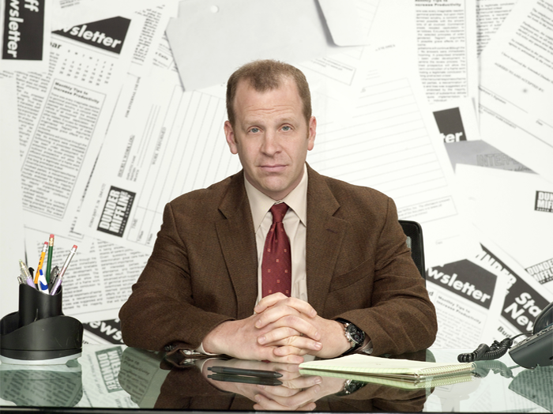

Michael Scott - Dunder Mifflin Co Manager
“People say I am the best boss. They go, "God we've never worked in a place like this before. You're hilarious." "And you get the best out of us." I think that pretty much sums it up. I found it at Spencer Gifts.”
Jim Halpert - Dunder Mifflin Co Manager
“ Co-managing is a give and take. You have to pick your battles. One of the battles that I picked was to stop Michael from running plastic tubes all over the office and placing hamsters inside of them. He was going to call it Tube City. So, yes, I do owe him one.”
Dwight Schrute - Assistant to the managers
“Before I do anything I ask myself, ‘would an idiot do that?’ and if the answer is yes. I do not do that thing.”

Toby Flenderson - Human Resources
“All right, look, what you gotta understand is that when you come to work, you give up certain rights.”
Angela Martin - Head Of Accounting
“I want you to know I'm putting my foot down when it comes to expense reports. Waste not, want not.”

Erin Hannon - Receptionist
"My favorite part about being a receptionist is that I get to have my own desk. My foster home never had a desk. So it's like a--I don't mean I don't like my foster home. I did like it I just, didn't have a desk there."